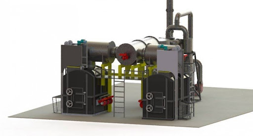
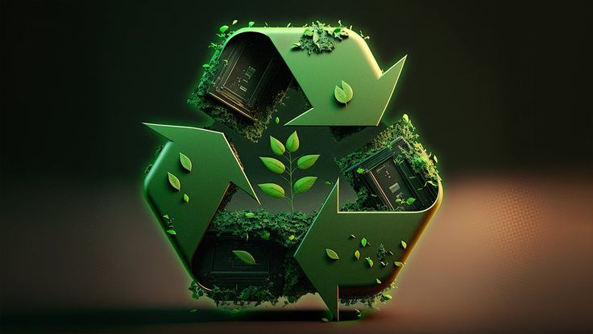
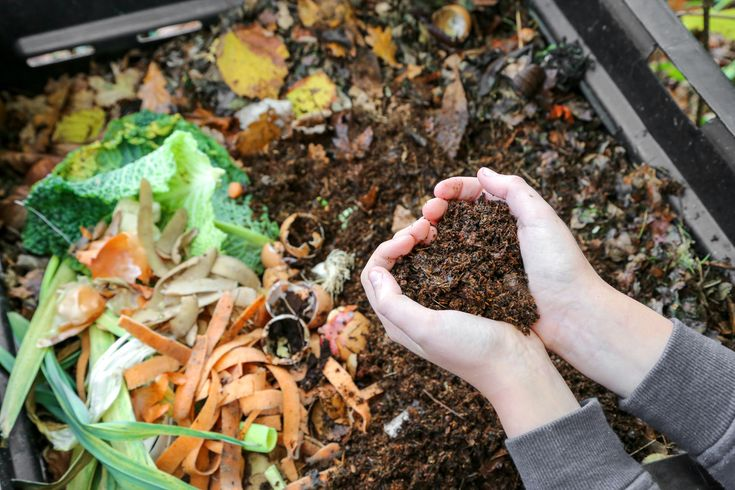

Teknologi Incinerator
Teknologi incinerator merupakan metode pengolahan sampah dengan
cara pembakaran pada suhu tinggi (800°C hingga 1.200°C) di dalam
ruang tertutup. Teknologi ini digunakan untuk mengurangi volume
sampah secara signifikan dan mengubahnya menjadi abu, gas, dan
energi panas. Hasil pembakaran ini dapat dimanfaatkan untuk
menghasilkan listrik atau digunakan dalam proses industri. Namun,
teknologi ini memerlukan kontrol ketat untuk mencegah polusi
udara, terutama emisi gas berbahaya seperti dioksin.

Teknologi Recycling
Teknologi daur ulang (recycling) bertujuan mengolah material
bekas, seperti plastik, logam, kaca, dan kertas, menjadi bahan
baru yang dapat digunakan kembali. Proses ini melibatkan beberapa
tahapan, seperti pengumpulan, pemisahan, pembersihan, dan
pengolahan. Dengan penerapan teknologi ini, kita dapat mengurangi
ketergantungan terhadap sumber daya alam, menghemat energi, serta
meminimalkan limbah yang berakhir di tempat pembuangan akhir.
Tantangan utamanya adalah meningkatkan kesadaran masyarakat untuk
memilah sampah sejak awal.

Teknologi Kompos
Teknologi kompos merupakan metode pengolahan sampah organik,
seperti sisa makanan dan dedaunan, menjadi pupuk alami. Proses ini
memanfaatkan mikroorganisme untuk mempercepat pembusukan material
organik dalam lingkungan yang terkendali. Kompos memiliki banyak
manfaat, seperti meningkatkan kesuburan tanah, mengurangi
penggunaan pupuk kimia, dan menurunkan emisi gas rumah kaca dari
limbah organik. Saat ini, teknologi kompos modern dilengkapi
dengan perangkat otomatis yang dapat mengatur kelembapan, suhu,
dan aerasi untuk mempercepat proses pembusukan.